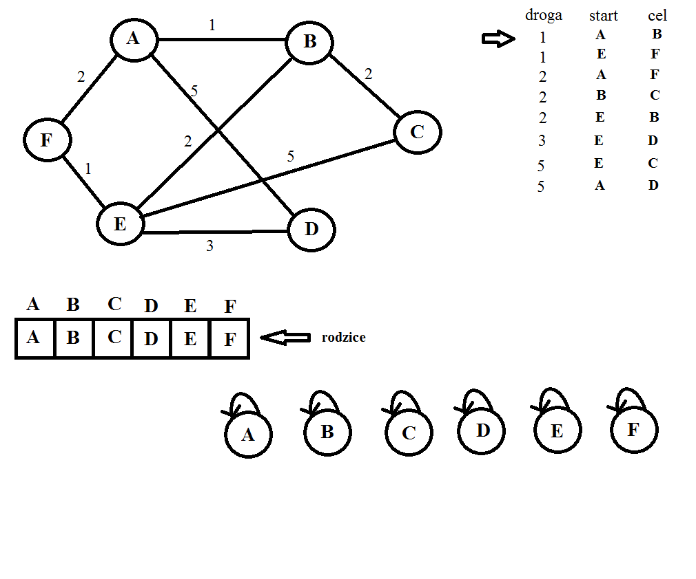

Wprowadzenie
Założeniem algorytmu Kruskala jest znalezienie minimalnego drzewa rozpinającego grafu.
Do kontroli poprawności drzewa użyjemy struktury Union-Find.
Działanie algorytmu Kruskala z strukturą Union-Find:
1.Sortujemy wszystkie połączenia między wierzchołkami od najkrótszego do najdłuższego.
2.Tworzymy tablice rodziców dla każdego wiechrzołka grafu na początku każdy wierzchołek jest własnym rodzicem.
3.Sprawdzamy po kolei czy wierzchołki mają różnych rodziców operacją Find, jeśli tak to łączymy je operacją Union.
4.Jeśli mają tego samego rodzica nie łączymy ich ponieważ zajdzie cykl, więc przechodzimy dalej.
5.Robimy to tak długo aż wszystkie wierzchołki będa miały wspólnego rodzica.
Oto przykład poprawnego działania algorytmu.
Kolejny przykład to wystąpienie cyklu podczas tworzenia drzewa rozpinającego. Zwróć uwagę przede wszystkim na tablicę rodziców.
